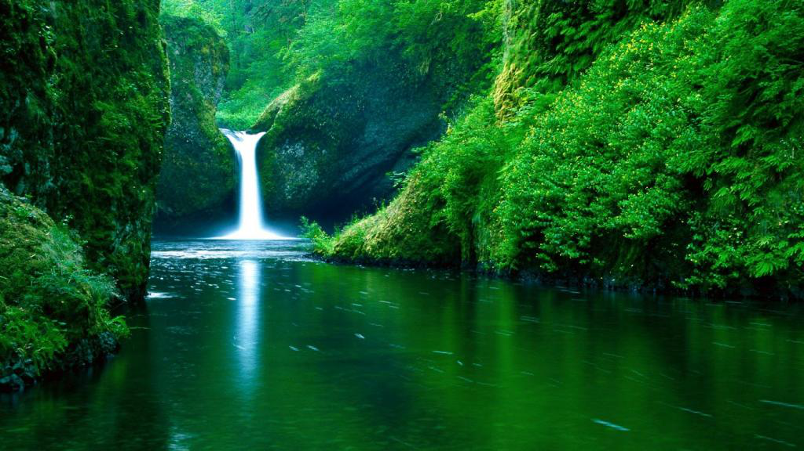
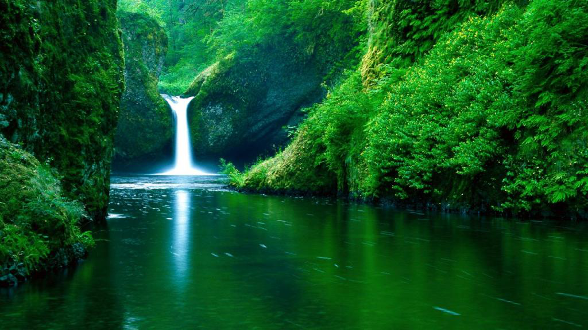
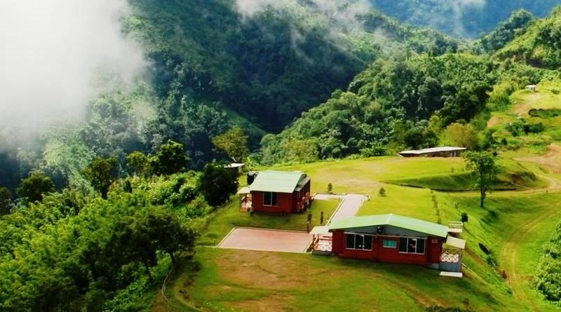
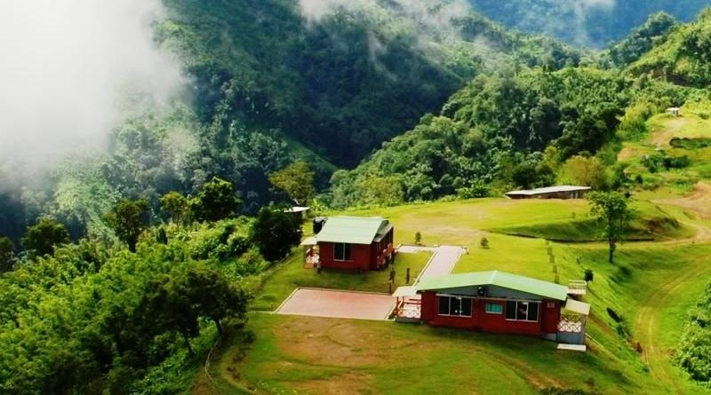

 



{kind=link}
As you have already known Bangladesh is famous as a land of rivers. There are so many rivers flow deep beneath the country. A wide variety of traditional boats that glorifies the tidal waves of the rivers, lakes and haors are national pride. Leaning over the deck while enjoying the aural sunset in a trip by ship or lunch to Sunderbans or Saint Martin's Island, or an adventurous boat ride against the strong wave while enjoying traditional song by the boatman will definitely force you to come back to the land of stories again and again.
Sadarghat Port is one of the most dynamic places in Dhaka. It is located in the southern part of Dhaka, on the river Buriganga. The Sadarghat Launch Terminal is one of the largest river ports in the world. About 200 large and small passenger launches (motorized boats) depart and arrive at the terminal every day. According to the officials at the terminal, 50,000 people, in average, use the terminal for departure and arrival every day.Chittagong, the oldest and largest port in Bangladesh, has been an entry-port for this region even before centuries ago. Apart from this, Mongla port is the second major sea port that has been handling the international container export-import matters very expertly.
Ship
Around 45 routes are operated from Sadarghat Launch Terminal by which you can sail to the northern or southern part of Bangladesh. The launches are operated by both government and private organizations. From early morning to midnight, you can easily confirm your booking.
Tourist Ship
There are so many adventurous and luxurious tour packages by ship/launch packages available to provide you a different image of the country. Amidst the strong tidal waves of classic Bangladeshi river, beneath the thrilling canals of the Sundarbans or against the tides of heavenly ocean, the launch/ship journey will definitely add some special moments in your tours.
List of companies providing luxurious Water Tourism package all over the country:
$row[name12]$row[address8]
"); } ?>
Boat
You should definitely give the traditional boat journey a try. The mesmerizing song of boatman on the bank of Bangladeshi river is never to be missed. And once you have this experience, you will come back to this country again and again.